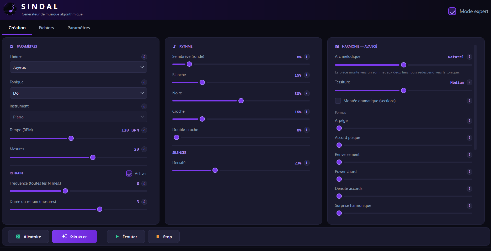

🎼
The music is yours
No subscription, no watermark, no clause about what you do with it. Files land on your own disk, in open formats.
Algorithmic music generator
Sindal composes on your own machine. Pick a mood, a key, a tempo, then listen, rework whatever falls flat, and export to MIDI, WAV or MusicXML. The music it produces belongs to you.
FreeNo accountWorks offlineNothing to install first
Why Sindal
Sindal has learned nothing from existing music. It applies the rules of written composition (scales, degrees, voice leading, cadences) to the settings you choose. What comes out resembles no one else's work, and raises no question about training data rights.
No subscription, no watermark, no clause about what you do with it. Files land on your own disk, in open formats.
No account, no server, no telemetry. Sindal runs entirely offline, sound synthesis included.
A bar you dislike? Generate three variations, hear them in context, graft in the one you prefer. Or open the editor and move notes one by one.
A complete General MIDI bank ships with the application: Sindal plays and exports audio from the moment it is installed. More about sound.
MIDI for your sequencer, WAV for editing, MusicXML for MuseScore or Dorico, PNG for a printable score.
No runtime to install beforehand, no administrator prompt. The application lands in your user folder and updates itself.
Listen
Generated by the application, then reworked inside it: bars regenerated, notes moved, structure adjusted. This is what the tool allows, from first draft to the version worth keeping.
How it works

Nine moods (happy, sad, epic, celtic, oriental, neoclassical and more), twelve keys, the tempo, the number of bars. Then, if you want to go further: chord density, harmonic colours, the rhythm profile, rests, the dynamic arc, the register, the refrain.
The engine writes a melody, a left hand and a bass line that agree with each other: chords are diatonic by construction, the left hand never holds more than three notes, and the piece ends on a real cadence with a ritardando.
Select the bars that miss. Sindal offers three variations, playable in context, and grafts in the one you pick. You can also insert or remove a bar, copy one bar onto another, or open the editor and move notes individually.
MIDI, WAV, a PNG score, MusicXML, and a .sindal project that reopens the piece
exactly as you left it.
Sound
A MIDI file holds no sound at all: it describes notes, and something has to play them. Sindal brings its own instrument, so the application sounds from the moment it is installed. No configuration, no external synthesiser, no connection.
S. Christian Collins' General MIDI SoundFont (32 MB, 128 instruments) is installed alongside the application, and is enough to play and export everything you compose. Its licence allows musical use, commercial included.
Load any .sf2 SoundFont or .sfz bank. A full sampled piano works, thanks
to lazy loading. The bank you choose is remembered and reloaded on the next launch.
Exported WAV is rendered by the active bank, not by a system synthesiser: what you hear in the application is exactly what lands in the file.
An .sfz bank describes a single instrument, so the instrument selector greys out and the
application explains why. That is deliberate: the bank is the instrument.
Download
Windows 10/11 64-bit, or macOS on Apple Silicon. Free, no account.